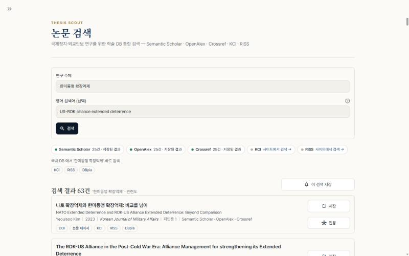
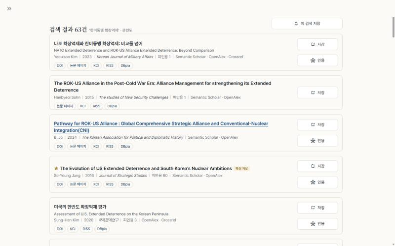
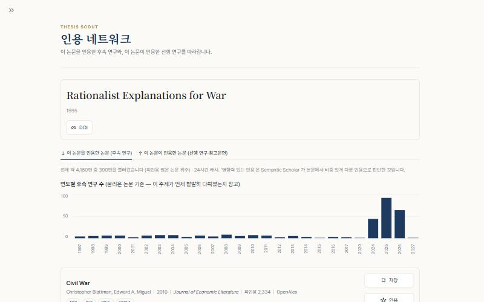

국제정치·외교안보 논문을
한 번에 찾아 주는 검색 도우미
Semantic Scholar · OpenAlex · Crossref 에서 동시에 찾고, KCI · RISS · DBpia 는 제목으로 바로 연결합니다. 내 서재에 모아 APA · 한국정치학회 양식 참고문헌까지 — 모두 내 컴퓨터 안에서.

이런 걸 해 줍니다
논문 찾기부터 참고문헌 정리까지, 석사 논문 준비에 필요한 일만 담았습니다.
여러 학술 DB 를 한 번에
해외·국내 DB 를 동시에 검색하고 같은 논문은 하나로 합칩니다. 연도·언어·피인용 필터와 정렬도 됩니다.
국내 논문은 한글 제목으로
국내 학술지는 한글 제목을 먼저 보여 주고, 모든 논문에 KCI · RISS · DBpia 제목 검색 링크를 붙입니다.
핵심 저널 표시
International Security, World Politics, 국제정치논총, 한국정치학회보 등 핵심 저널 논문에 ★ 배지를 붙입니다.
인용 네트워크
한 논문을 인용한 후속 연구와, 그 논문이 인용한 선행 연구를 피인용 순으로 따라갑니다.
내 서재 · 참고문헌
저장한 논문을 프로젝트·태그·메모로 정리하고, 참고문헌으로 바로 내보냅니다.
합법적인 무료 PDF 만
Open Access 로 공개된 PDF 만 내려받습니다. 구독 논문은 DOI · 학교 도서관 링크로 안내합니다.


설치 방법
처음 한 번만 조금 기다리면, 그다음부터는 더블클릭 한 번이면 됩니다.
파이썬 설치 (처음 한 번만)
python.org 에서 Download Python 을 눌러 설치합니다. 설치 첫 화면 아래쪽의 “Add python.exe to PATH” 를 꼭 체크하세요.
내려받아 압축 풀기
위의 Windows 용 내려받기 로 받은 파일을 마우스 오른쪽 → 모두 압축 풀기 합니다.
실행하기.bat 더블클릭
처음 한 번은 필요한 프로그램을 설치하느라 1~3분 걸립니다. 잠시 뒤 인터넷 브라우저에 Thesis Scout 가 열립니다. 다 쓰면 함께 열린 검은 창을 닫으세요.
“Windows 의 PC 보호” 파란 창이 뜨면 추가 정보 → 실행 을 누르세요.
자세한 안내는 압축 파일 안의 설치_안내.txt 에도 있습니다.
자주 묻는 질문
돈이 드나요?
아니요. 프로그램과 검색 모두 무료입니다. 선택 사항으로 무료 API 키(예: Semantic Scholar)를 넣으면 검색이 더 안정적입니다.
내 서재와 검색 기록은 어디에 저장되나요?
내 컴퓨터 안(data 폴더)에만 저장됩니다. 이 사이트나 다른 서버로 보내지 않습니다.
다만 논문을 찾기 위해 검색어는 공개 학술 데이터베이스로 전달됩니다.
맥(Mac)에서도 되나요?
지금은 Windows 용 실행 파일만 있습니다.
AI 가 논문을 요약해 주나요?
아니요. 제목·초록·링크를 정확히 보여 주는 데 집중합니다. 논문에 인용할 때는 반드시 원문을 확인하세요.
새 버전은 어떻게 받나요?
이 페이지에서 다시 내려받아 새 폴더에 풀면 됩니다. 예전 폴더의 data 폴더와 .env 파일을 새 폴더로 복사하면
서재를 그대로 이어서 쓸 수 있습니다.